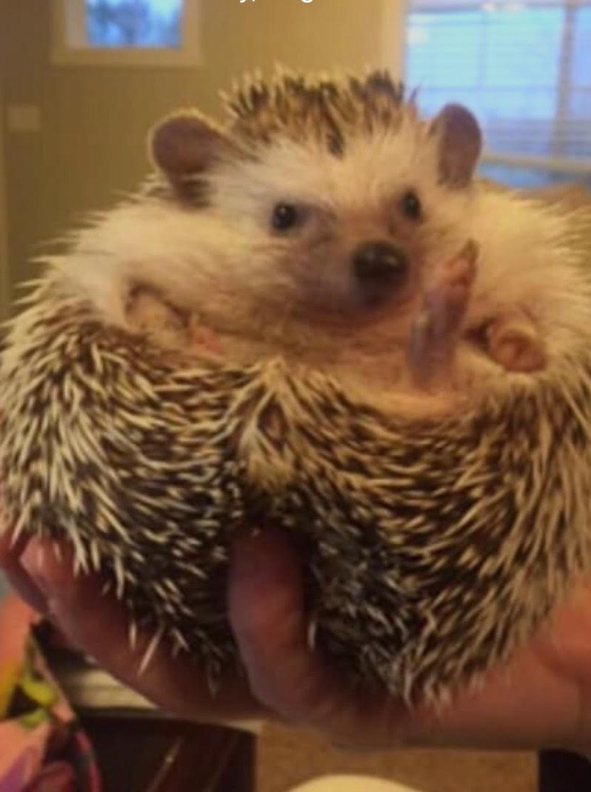
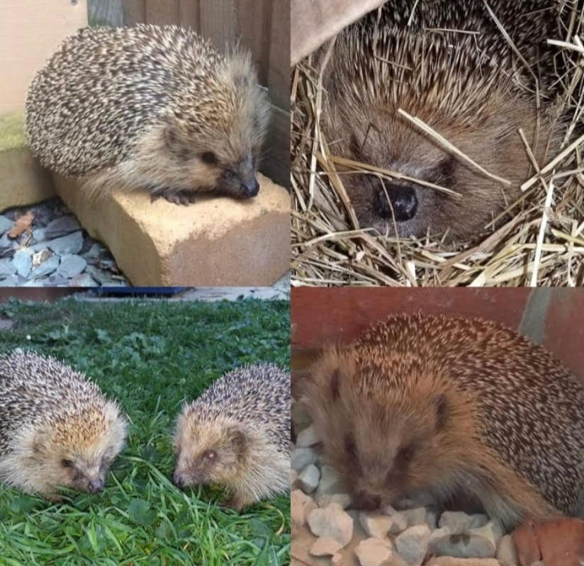
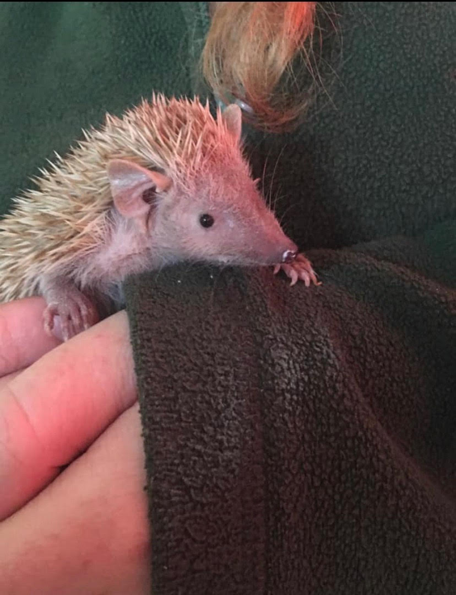

Hedgehogs of the World

Rosie is my personal hedgehog. She is an African Pigmy Hedgehog. They are found in many parts of Africa but primarily in Madagascar.

This is my friend in England's hedgehog. His name is Woody. He's a European Hedgehog. Those are only legal to keep as pets when they are disabled in the U.K. and are illegal in the United States. Woody is blind.

This is a Lesser Tenrec. They are not technically related to hedgehogs but are a big part of the hedgehog community despite this and look quite similar
There are many other types of hedgehogs in the world but these are the ones I regularly take interest in my life.
An interesting evolutionary phenomenon is that some sort of spikey animal can be found on all continents and in the ocean. Whether it be a porcupine, sea urchin, Echidna, or a multiple of others, all kinds of animals find spikes to be a natural protectant against predators.